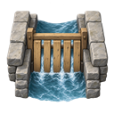

Sluice gate door: menu icon RM_Sluice / FLOWWORKS_DOOR_FAMILY_1
CURRENT in game

NEW render(s)

facts PASS ; validator skipped; canon_check skipped; 128x128
prompt and notes
UI icon at 128x128, subject filling about 85% of the canvas, readable at 64 pixels. Natural light wood colour. Realistic painted natural-history illustration: grounded, believable form and anatomy, matte surface texture, soft painted edges, the silhouette carried by value and colour contrast against a mid-tone ground rather than by a drawn line; never cartoonish, never cute, no outlines.
RimWorld build-menu icon: a slatted wooden canal sluice gate standing in a short stone-lined channel mouth, water passing between the slats, seen in RimWorld's top-down three-quarter view. Background fully transparent.
install target (not installed): src/RimMandrake/FlowWorks/Textures/Things/Building/FlowWorks/Doors/RM_Sluice_MenuIcon.png
No canon entry exists for this subject (design/RimStarWars/canon_references has none; artpipe canon_check skipped: no canon entry and no owner note), so there is no Must show list.